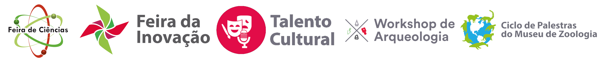

XII SCT PARTICIPE PROGRAMAÇÃO ÁREA DO INSCRITO CONHEÇA A UNESC CONTATO |
SOBRE A XII SCT
A Semana de Ciência e Tecnologia (SCT) é o evento institucional da Universidade do Extremo Sul Catarinense (Unesc) em comemoração à Semana Nacional de Ciência e Tecnologia, promovida pelo Ministério da Ciência, Tecnologia e Inovações.
Em 2021, a XII edição da SCT acontece de forma virtual e tem como temática “A transversalidade da ciência, tecnologia e inovação para o planeta”. A XII SCT objetiva fomentar a discussão do conhecimento e das experiências relacionadas à transversalidade da ciência, da tecnologia e da inovação para o desenvolvimento equitativo e sustentável.
A transversalidade se refere à visão sistêmica, à interconexão e à construção coletiva que possibilita a intervenção na realidade para a sua transformação, sendo necessárias mudanças organizacionais, metodológicas e conceituais.
Os Objetivos de Desenvolvimento Sustentável (ODS) compreendem a transversalidade como uma das formas estratégicas para que os desafios deste século sejam superados pelo desenvolvimento econômico, social e ambiental de modo sustentável.
Assim, discussões como as que acontecerão na XII SCT são fundamentais para que se compreendam as potencialidades da transversalidade da ciência, da tecnologia, da inovação e de todas as áreas do conhecimento no enfrentamento dos desafios regionais, nacionais e planetários.
A XII SCT acontece no período de 08 a 12 de novembro, na modalidade virtual. Durante a XII SCT são realizados o 21º Seminário de Iniciação Científica, o 13º Salão de Extensão, o 11º Salão de Ensino, o 7º Salão de Pós-Graduação, a 8ª Feira de Inovação, o 8º Talento Cultural, a 7ª Feira de Ciências, o 6º UNESC Innovation Bootcamp, o 6º Workshop de Arqueologia e o 4º Ciclo de Palestras do Museu de Zoologia. O evento é composto por palestras, oficinas, minicursos e apresentações de trabalhos de pesquisa, extensão e relatos de ensino/experiência.
EVENTOS PARCEIROS DO XII SCT |
 |
PRINCIPAIS ÁREAS |


NOSSOS PARCEIROS |
REALIZAÇÃO
PATROCINADORES
APOIADORES
|  |